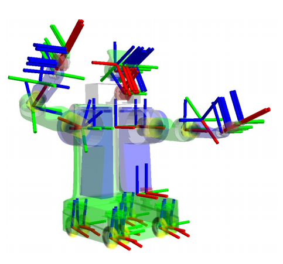

设置变换
在本指南中，我们将讨论Nav2所需的必要变换。这些变换使Nav2能够解释来自各种来源（如传感器和里程计）的信息，通过将它们转换为用于使用的坐标框架。下面是一个机器人的完整变换树示例，但我们将从更简单的内容开始。
在本教程中，我们首先简要介绍ROS中的变换。其次，我们将通过一个简单的命令行演示TF2静态发布者来实际操作。最后，我们将概述需要发布的变换，以使Nav2能够正常运行。
变换介绍
注解
本指南的此部分内容改编自ROS（1）导航文档中的“使用tf设置机器人”教程。
许多ROS软件包要求使用TF2 ROS软件包来发布机器人的变换树。变换树定义了不同坐标系之间的关系，包括平移、旋转和相对运动。为了更具体，让我们应用一个简单机器人的例子，该机器人具有一个在其顶部安装的单个激光传感器的移动底座。
此机器人有两个定义的坐标框架：一个对应于机器人移动基座的中心点，另一个对应于安装在基座顶部的激光的中心点。我们将称与移动基座相关联的坐标框架为``base_link``，称与激光相关联的坐标框架为``base_laser``。请注意，我们将在下一节中更详细地讨论这些坐标框架的命名和约定。
在这一点上，让我们假设我们有一些来自激光器的数据，以距离激光中心点的测量形式存在。换句话说，我们有一些``base_laser``坐标框架中的数据。
现在，假设我们想利用从``base_laser``坐标框架接收到的数据帮助移动基座避开世界中的障碍物。为了成功实现这一点，我们需要一种将接收到的激光扫描从``base_laser``坐标框架转换到``base_link``坐标框架的方法。本质上，我们需要定义``base_laser``和``base_link``坐标框架之间的关系。

在定义这种关系时，让我们假设我们唯一拥有的数据是激光器相对于移动底座中心点的前向10厘米和上方20厘米的安装位置。这给了我们一个平移偏移量，将``base_link``框架与``base_laser``框架相关联。具体来说，我们知道要将数据从``base_link``框架转换到``base_laser``框架，我们必须应用平移变换（x: 0.1m，y: 0.0m，z: 0.2m），反之亦然，要将数据从``base_laser``框架转换到``base_link``框架，我们必须应用相反的平移变换（x: -0.1m，y: 0.0m，z: -0.20m）。
我们可以选择自己管理这种关系，即在必要时存储和应用两个坐标框架之间的适当变换，但随着坐标框架数量的增加，这将变得非常麻烦。幸运的是，我们不必自己完成这项工作。相反，我们将使用TF2一次性定义``base_link``和``base_laser``之间的关系，并让它为我们管理两个坐标框架之间的变换。在处理非静态变换时，这尤其有用，例如一组相对运动的坐标框架，比如地图坐标框架中的机器人基座坐标框架。
要使用TF2定义和存储``base_link``和``base_laser``帧之间的关系，我们需要将它们添加到一个变换树中。在概念上，变换树中的每个节点对应一个坐标帧，每条边对应于从当前节点到其子节点的变换。TF2使用树结构来保证任意两个坐标帧之间只有一条遍历路径，并假设树中的所有边都是从父节点指向子节点的。

为了为我们的简单示例创建一个变换树，我们将创建两个节点：一个用于 base_link 坐标系，一个用于 base_laser 坐标系。要创建它们之间的边，我们首先需要决定哪个节点将作为父节点，哪个将作为子节点。请记住 —— 这个区别很重要，因为TF2假定所有的变换都是从父节点到子节点。
让我们选择``base_link``坐标帧作为父节点，因为当其他部件/传感器添加到机器人上时，它们与``base_laser``坐标帧之间的关系最容易通过遍历``base_link``坐标帧来建立。这意味着连接``base_link``和``base_laser``的边对应的变换应为（x: 0.1m，y: 0.0m，z: 0.2m）。
有了这个设置好的变换树，将接收到的激光扫描从 base_laser 坐标系转换到 base_link 坐标系只需简单地调用TF2库。我们的机器人现在可以使用这些信息来推理 base_link 坐标系中的激光扫描并安全地规划绕过环境中的障碍物。
静态变换发布器演示
警告
如果您是ROS 2的新手或尚未拥有工作环境，请花些时间使用官方的 ROS 2安装文档 来正确设置您的机器。
现在让我们尝试使用TF2提供的static_transform_publisher工具发布一个非常简单的变换。我们将发布从链接``base_link``到链接``base_laser``的变换，其平移为（x: 0.1m，y: 0.0m，z: 0.2m）。请注意，我们将根据本教程中的早期图表构建变换。
打开命令行并执行以下命令：
ros2 run tf2_ros static_transform_publisher 0.1 0 0.2 0 0 0 base_link base_laser
通过这样做，我们现在成功地在TF2中发布了``base_link``到``base_laser``的变换。现在让我们通过``tf2_echo``检查它是否正常工作。打开一个单独的命令行窗口并执行以下操作：
ros2 run tf2_ros tf2_echo base_link base_laser
您应该能够观察到类似下面的重复输出。
At time 0.0
- Translation: [0.100, 0.000, 0.200]
- Rotation: in Quaternion [0.000, 0.000, 0.000, 1.000]
这就是这个简短演示的全部内容 - 我们能够成功地使用TF2库发布了从``base_link``到``base_laser``的变换。请注意，我们不建议在实际的机器人项目中使用上述演示，这只是一个快速演示以展示TF2的功能。对于真实的机器人系统，我们将创建一个包含此信息以及有关机器人更多信息的URDF文件，以供robot_state_publisher使用，而不是static_transform_publisher。有更适合和实用的方法来处理这个问题，这将在:ref:`urdf_handson`教程中讨论。
参见
如果您想了解更多关于TF2以及如何创建自己的变换发布器的信息，请参阅官方的 TF2文档
结论
在本教程中，我们已经讨论了变换的概念以及它们在Nav2中的使用。
在上一节中，我们还探讨了使用TF2的static_transform_publisher来发布我们的转换。您可以使用它来设置Nav2的转换，但这通常不是最好的方法。在大多数机器人项目中，我们使用机器人状态发布器，因为它更容易使用，并且随着机器人变得更加复杂，它的扩展性也更好。下一篇教程中我们将讨论机器人状态发布器、URDF以及如何设置它：参考：urdf_handson。
最后，我们还讨论了Nav2的三个已发布的转换需求以及在设置它们时需要记住的必要REPs。